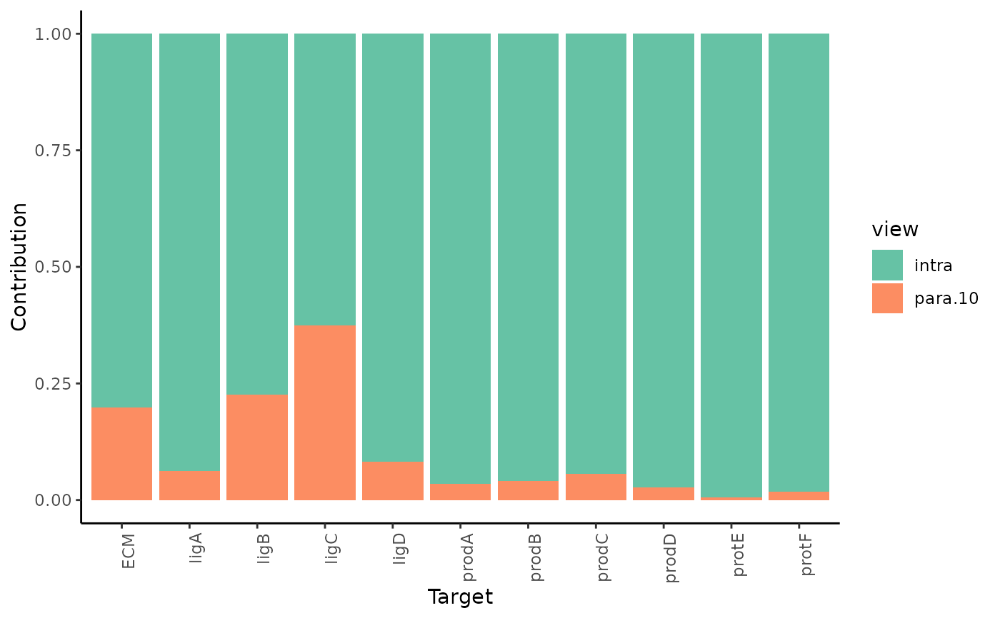

Generate a stacked barplot of the average view contribution fraction per target across all samples from the results.
Usage
plot_view_contributions(
misty.results,
trim = -Inf,
trim.measure = c("gain.R2", "multi.R2", "intra.R2", "gain.RMSE", "multi.RMSE",
"intra.RMSE")
)Arguments
- misty.results
a results list generated by
collect_results().- trim
display targets with performance value above (if R2 or gain) or below (otherwise) this value only.
- trim.measure
the measure used for trimming.
See also
collect_results() to generate a
results list from raw results.
Other plotting functions:
plot_contrast_heatmap(),
plot_contrast_results(),
plot_improvement_stats(),
plot_interaction_communities(),
plot_interaction_heatmap()
Examples
all.samples <- list.dirs("results", recursive = FALSE)
collect_results(all.samples) %>% plot_view_contributions()
#>
#> Collecting improvements
#>
#> Collecting contributions
#>
#> Collecting importances
#>
#> Aggregating
